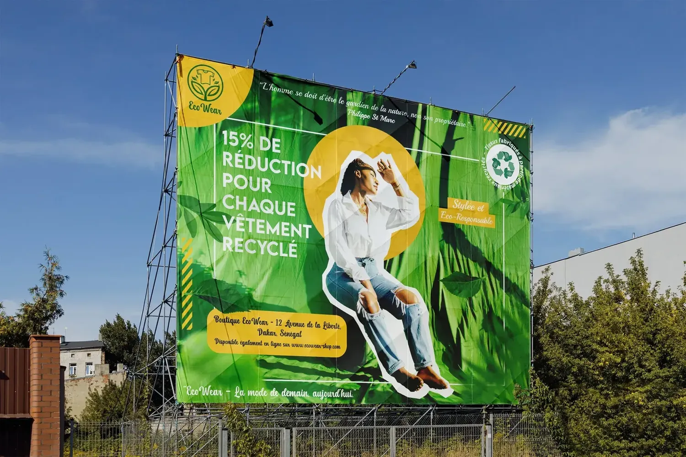
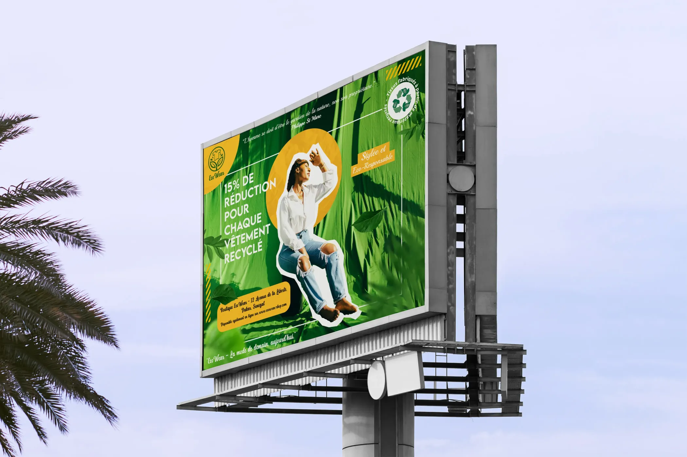
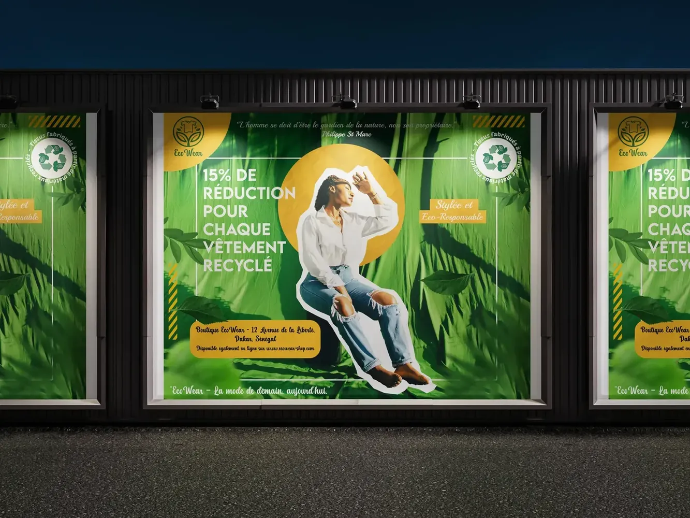

Affiche EcoWear




Cette affiche publicitaire grand format (5×4 mètres) pour EcoWear représente une campagne ambitieuse de sensibilisation à la mode éthique et responsable, destinée aux jeunes adultes urbains (18-35 ans). Conçue pour être visible sur des panneaux d'affichage dans les grandes villes, elle capture l'attention tout en transmettant un message écologique puissant (conçue dans le cadre d'un challenge du Groupe des Designers Africains).
Composition et hiérarchie visuelle
L'affiche adopte une mise en page paysage audacieuse où chaque élément joue un rôle stratégique. Le fond photographique de feuilles vertes crée une immersion totale dans l'univers naturel, évoquant instantanément l'engagement écologique de la marque. Ces feuilles de palmier ou de bambou ne sont pas un simple décor : elles représentent la source même des textiles durables.
Au centre, une jeune femme noire en tenue décontractée (chemise blanche et jean troué) incarne la cible de la campagne. Sa posture décontractée et confiante, main à la casquette, communique l'idée que la mode éco-responsable est accessible, moderne et stylée. Le choix d'un jean déchiré est particulièrement symbolique : il montre que même les vêtements usés ont de la valeur et peuvent être recyclés. La forme irrégulière découpée qui entoure le modèle, avec son contour blanc et sa texture de papier froissé, rappelle visuellement le concept de recyclage et de découpage manuel, renforçant le message artisanal et authentique.
Typographie et messages clés
La hiérarchie typographique est parfaitement orchestrée. Le message principal "15% DE RÉDUCTION POUR CHAQUE VÊTEMENT RECYCLÉ" utilise la police Lemon Milk en blanc, créant un contraste maximum avec le fond vert pour une lisibilité optimale à distance. Cette offre promotionnelle concrète transforme l'engagement écologique en bénéfice immédiat pour le consommateur.
En haut, la citation de Philippe St Marc "L'homme se doit d'être le gardien de la nature, non son propriétaire" (en police Might Sunday) donne une profondeur philosophique à la campagne, élevant le discours au-delà du simple marketing. C'est un appel à la conscience collective.
Le badge "Stylée et Éco-Responsable" (police Playball) dans un rectangle doré avec texture papier crée un point focal secondaire, rassurant les consommateurs sur le fait qu'écologie et style ne sont pas incompatibles.
Éléments visuels et symbolisme
Le logo EcoWear apparaît deux fois : en haut à gauche sur fond jaune (visibilité maximale) et intégré au badge de recyclage à droite. Ce badge circulaire avec le symbole universel du recyclage et le texte Tissus fabriqués et conçus avec des matériaux recyclés"" apporte une crédibilité institutionnelle au message.
Les bandes diagonales jaunes et noires (style avertissement industriel) près du badge créent un rappel visuel urgent : l'urgence climatique ne peut plus être ignorée. La police Poetsen utilisée pour les informations du badge ajoute une touche moderne et technique.
Informations pratiques
En bas de l'affiche, dans un rectangle jaune doré qui se détache clairement, figurent les coordonnées de la boutique (Might Sunday) :
Boutique EcoWear - 12 Avenue de la Liberté, Dakar, Sénégal
Disponible également en ligne sur www.ecowear-shop.com
Cette double présence physique et digitale montre que la marque est accessible à tous, quel que soit leur mode de consommation.
Le slogan de la marque "EcoWear – La mode de demain, aujourd'hui" (également en Might Sunday) clôture l'affiche en bas, ancrant le message final : l'avenir de la mode commence maintenant.
Palette de couleurs stratégique
Le vert émeraude dominant (Hunter Green #1F5E18) évoque immédiatement la nature, la croissance et l'écologie. Le jaune doré (Saffron #F3BE00 / Amber #F9BD29) apporte chaleur, optimisme et raffinement. Le blanc pur garantit la lisibilité du texte. Le noir et les touches d'orange sur les accessoires du modèle créent des points d'accroche visuelle. Cette palette tricolore (vert-jaune-blanc) crée également un écho subtil aux couleurs du Sénégal, ancrant la marque dans son territoire.
Impact et efficacité publicitaire
À 5 mètres de hauteur sur 4 mètres de largeur, cette affiche commande l'attention dans l'espace urbain. Sa composition équilibrée permet une lecture rapide : en 3 secondes, un passant comprend le message (mode éco-responsable + réduction 15%). La forme organique découpée autour du modèle crée du mouvement et brise la rigidité habituelle des panneaux publicitaires rectangulaires.
L'utilisation d'un cercle doré derrière le modèle (rappelant un soleil ou une graine germant) crée une auréole symbolique : porter EcoWear, c'est être du côté des solutions, pas des problèmes. Les rectangles dorés avec texture papier froissé renforcent visuellement le concept de recyclage tout en apportant une dimension tactile et artisanale au design digital.
Message subliminal
Au-delà de la promotion commerciale, cette affiche véhicule un message de transformation sociale. Le modèle noir, fier et décontracté, montre que la mode durable n'est pas réservée à une élite : c'est un mouvement inclusif et accessible. Le jean troué prouve qu'on n'a pas besoin du neuf pour être stylé. La nature omniprésente rappelle notre dépendance aux ressources naturelles. Chaque élément visuel converge vers une seule idée : le changement est possible, désirable et urgent.
© 2025 by Frenzy Design